OBD-II · ANDROID
DC-ELM327
Diagnóstico OBD-II con datos en vivo, lectura de DTC, gráficas y conexiones Bluetooth, USB y Wi-Fi. El mismo repositorio contiene DC-ESCANER.
dcg0/dc-elm-327
APPS / PUBLIC REPOSITORIES
Un directorio de los 20 repositorios GitHub únicos enlazados desde las fichas públicas de DC Laboratory. Encuentra proyectos de diagnóstico y telemetría automotriz, aplicaciones, herramientas y plataformas.
ECU / OBD-II / FLEET TECH
Repositorios enlazados desde las fichas de diagnóstico, control de ECU, monitoreo de flotillas y herramientas para el taller.
Diagnóstico OBD-II con datos en vivo, lectura de DTC, gráficas y conexiones Bluetooth, USB y Wi-Fi. El mismo repositorio contiene DC-ESCANER.
dcg0/dc-elm-327
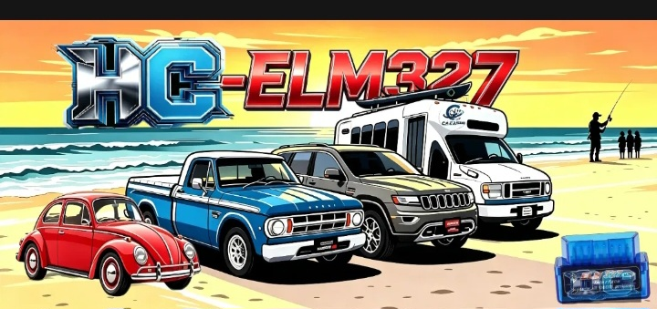
Edición Android con comunicación Bluetooth reforzada, sensores, códigos DTC y panel de diagnóstico.
dcg0/DC-elm327HC
Tablero OBD-II para sensores, códigos DTC y monitoreo automotriz; antes DC Tune HC / Camion V10.
dcg0/DC-carECU
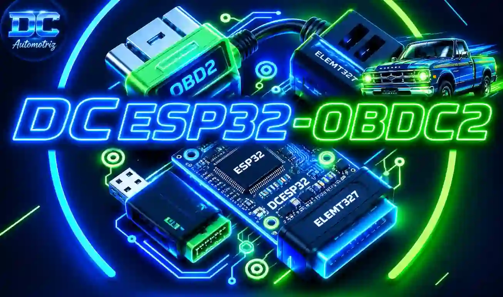
Proyecto de diagnóstico OBD-II con ESP32 y ELM327; el sitio incluye una demo visual de siete pantallas con datos ficticios.
dcg0/DCesp32
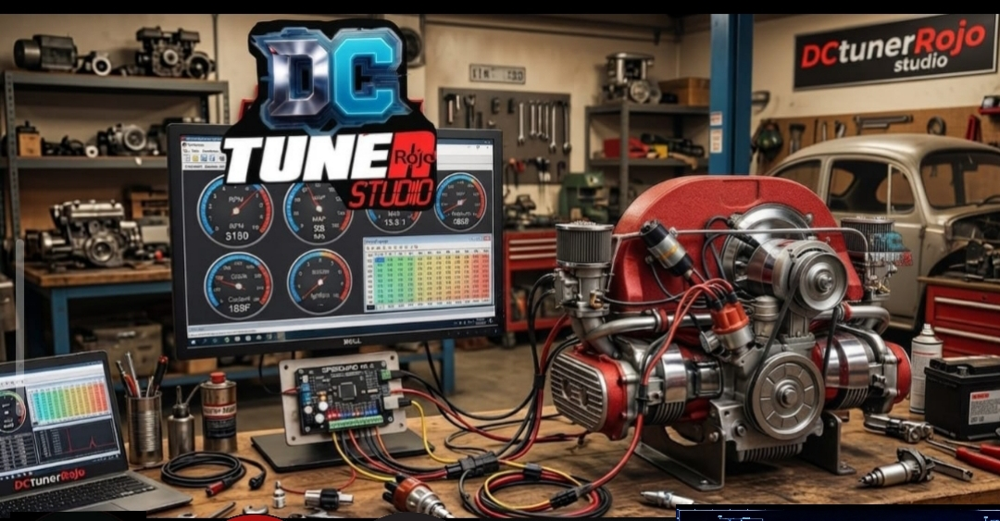
Herramienta multiplataforma de diagnóstico, mapas, telemetría y análisis ECU para PC, Raspberry Pi y navegador.
dcg0/DCtuneRstudio
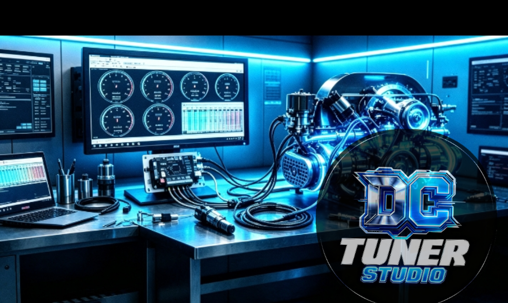
Software de telemetría, ajuste ECU y visualización de datos para Speeduino, MegaSquirt y ELM327.
dcg0/DC-tuner-studio-
Sitio web del proyecto DC Tuner Studio para consulta y presentación del producto.
dcg0/DC-tuner-studio-site
Variante de DC-ELM327 con identidad visual nocturna y fondo OBD optimizado.
dcg0/DC327
Repositorio Android de la familia DC ECU / ELM327 enlazado desde la ficha de descargas.
dcg0/DCecuelm327
Repositorio base de herramientas de diagnóstico vehicular OBD-II citado en el catálogo.
dcg0/ELM327
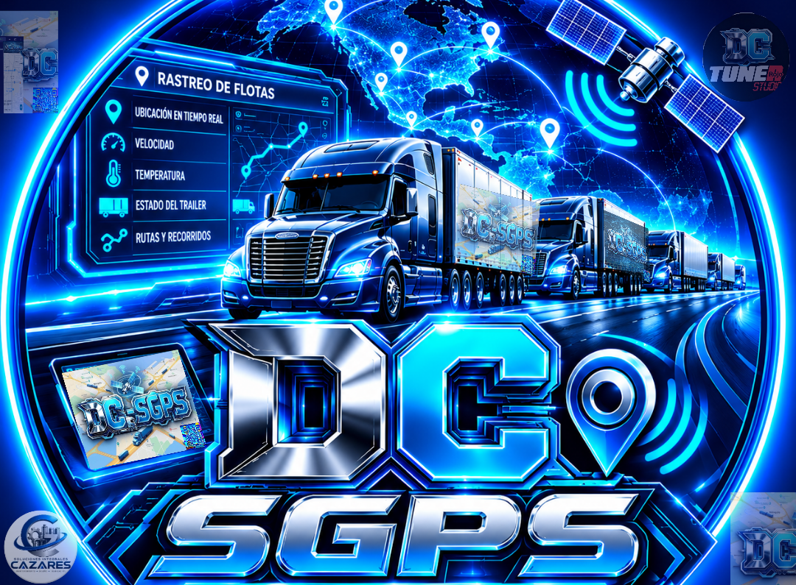
Monitoreo de flotillas con ubicación, velocidad, temperatura, rutas y estado de trailers.
dcg0/DC-SGPS-
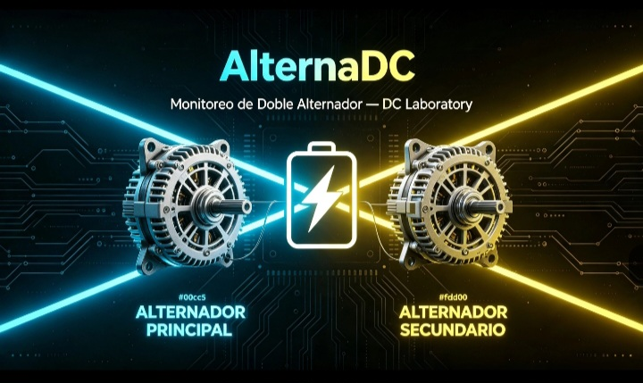
Monitoreo de dos alternadores, automatización de luces, alertas sonoras y panel web local.
dcg0/AlternaDC
APPS / IA / OPEN SOURCE
Aplicaciones, automatización, proyectos web y enlaces de referencia que también forman parte del catálogo público del sitio.
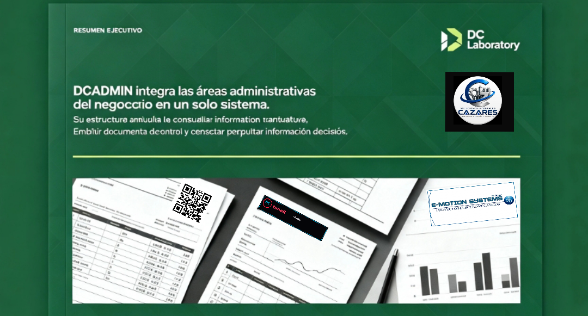
Gestión de clientes, inventario, facturación y reportes para la operación diaria.
dcg0/DCADMIN
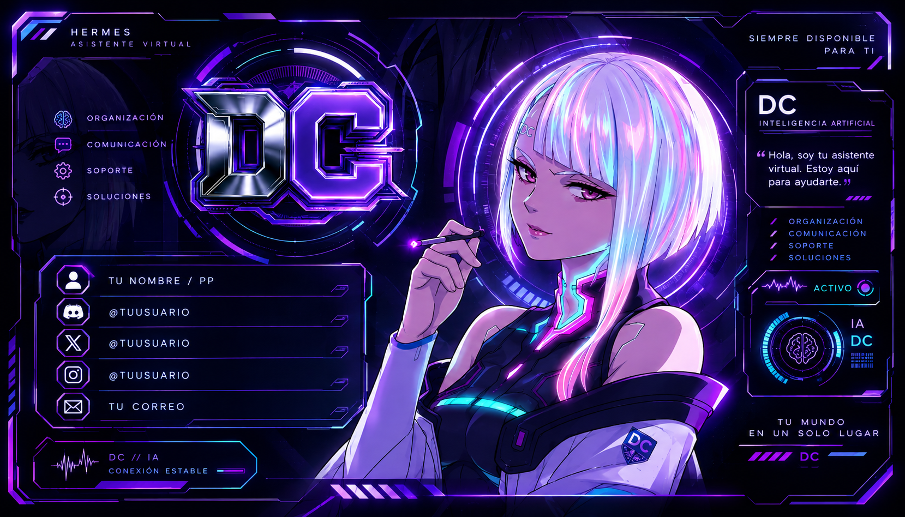
Aplicación de chat y voz en español con avatar y herramientas de asistencia.
dcg0/Lucy
Emulador y entorno de creación de juegos del laboratorio. La tarjeta conserva el emblema 3D textual usado en la sección de descargas.
dcg0/DCemulator
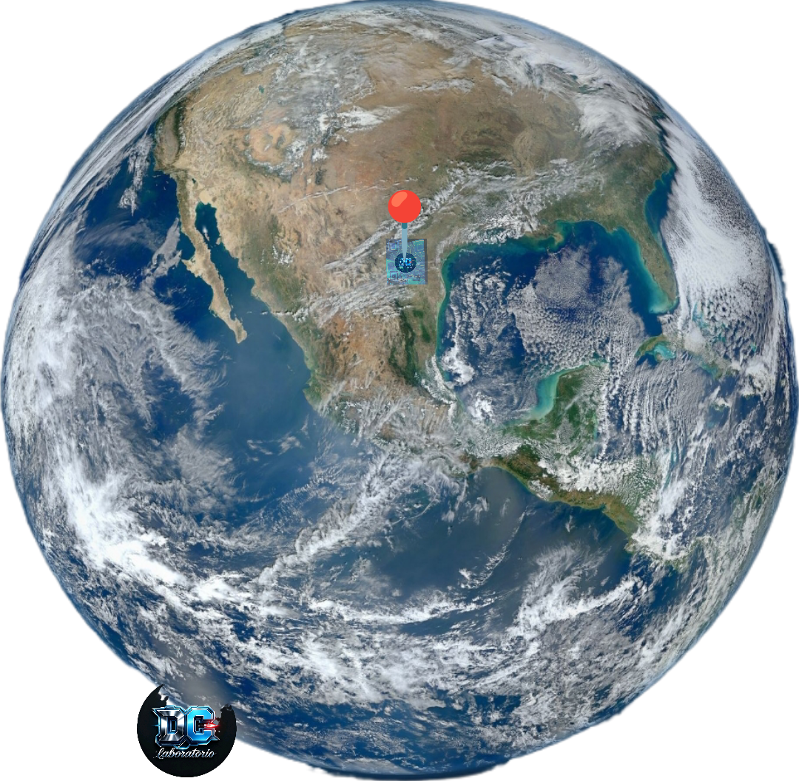
Experiencia web de planeta, ubicación y visualización de la Tierra.
dcg0/planeta
Exploración visual del planeta con una experiencia tipo globo terrestre inspirada en la observación de la Tierra desde el espacio.
dcg022dc-prog/ojoDC
Bot de WhatsApp con IA, descargas, stickers, administración y herramientas de automatización.
dcg2390/DCG-laboratory
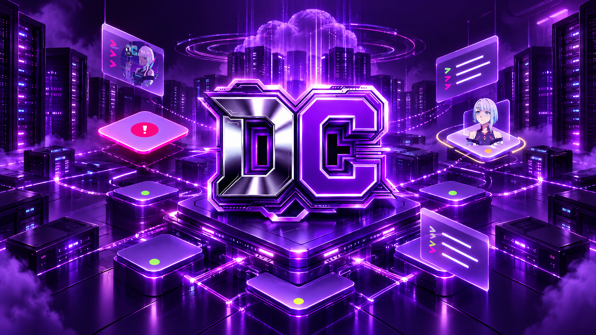
Página de referencia del sitio sobre la plataforma de centros de datos DC/OS; el destino enlazado es su repositorio de upstream.
dcos/dcos · repositorio de referencia
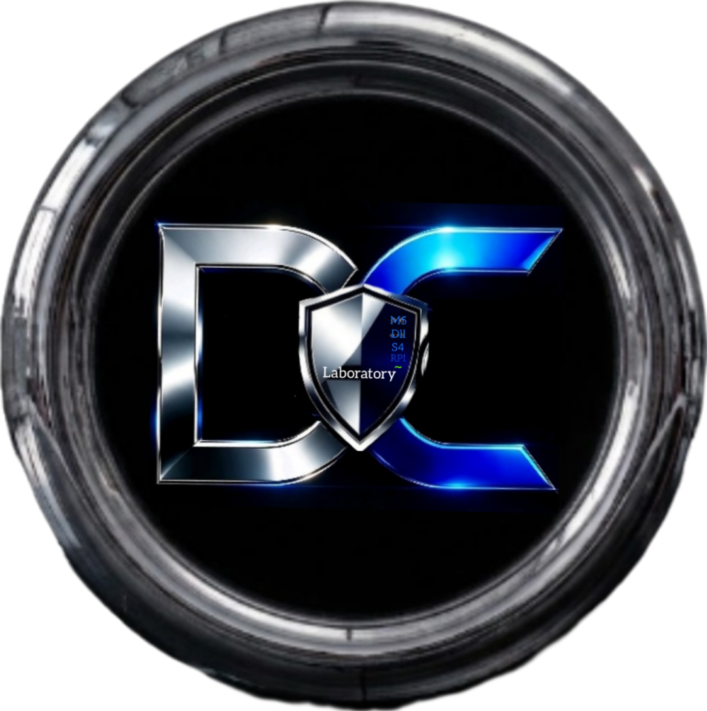
Este portal, sus proyectos, utilidades y documentación pública.
dcg0/DC-laboratory
Nota: el catálogo reúne los destinos de GitHub que las páginas actuales del portal enlazan. Cuando el destino apunta a otro propietario u organización, se conserva su nombre exacto; el enlace de DCos se presenta como repositorio upstream de referencia.